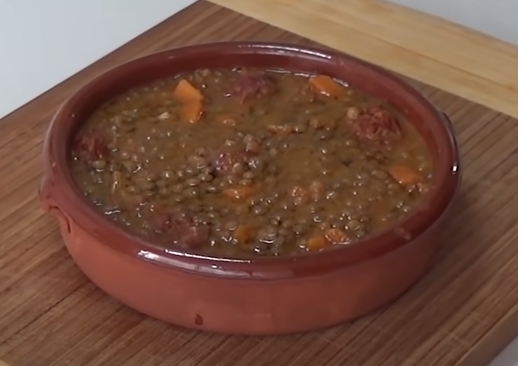

Lentil soup (in Instant Pot)
Ingredients
- Round lentils 200gr
- Spicy Spanish chorizo 200gr
- Big onions (1)
- Medium-sized carrots (4)
- Medium-sized potatoes (2)
- Garlic cloves (4)
- Stock cubes (2)
- Cumin (2 tsp)
- Paprika (2 tsp)
Steps
-
Wash the lentils in a strainer, caring about removing any little stone
if present
- Peel the onion and cut it in small pieces
- Peel the potatoes and the carrots and cut them in small pieces
- Peel the chorizo and cut it in small pieces
- Clean the garlic cloves and chop them in very small pieces
-
Start the Instant Pot in 'Sauté' mode and cook the chorizo during 10min
- Add the onions and the garlic and cook for another 20min
-
Mix the 2 stock cubes, the paprika and the cumin and add all to the pot
-
Add the carrots, the potatoes and the lentils and mix all together
- Add water until covering
- Cook for 15min high pressure. Use natural release
- Serve and enjoy
